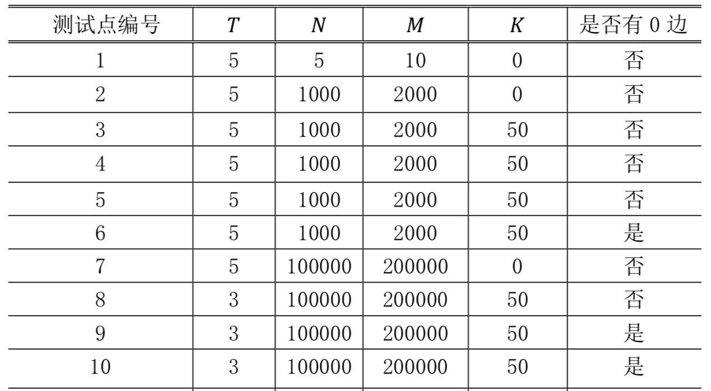

策策同学特别喜欢逛公园。公园可以看成一张 $𝑁$ 个点 $𝑀$ 条边构成的有向图，且没有自环和重边。其中 $1$ 号点是公园的入口，$𝑁$ 号点是公园的出口，每条边有一个非负权值，代表策策经过这条边所要花的时间。
策策每天都会去逛公园，他总是从 $1$ 号点进去，从 $𝑁$ 号点出来。
策策喜欢新鲜的事物，他不希望有两天逛公园的路线完全一样，同时策策还是一个特别热爱学习的好孩子，他不希望每天在逛公园这件事上花费太多的时间。如果 $1$ 号点到 $𝑁$ 号点的最短路长为 $𝑑$，那么策策只会喜欢长度不超过 $𝑑 + 𝐾$ 的路线。
策策同学想知道总共有多少条满足条件的路线，你能帮帮他吗？
为避免输出过大，答案对 $𝑃$ 取模。
如果有无穷多条合法的路线，请输出 $−1$。
第一行包含一个整数 $𝑇$，代表数据组数。
接下来 $𝑇$ 组数据，对于每组数据：
第一行包含四个整数 $𝑁, 𝑀, 𝐾, 𝑃$，每两个整数之间用一个空格隔开。
接下来 $𝑀$ 行，每行三个整数 $𝑎_𝑖, 𝑏_𝑖, 𝑐_𝑖$，代表编号为 $𝑎_𝑖, 𝑏_𝑖$ 的点之间有一条权值为 $𝑐_𝑖$ 的有向边，每两个整数之间用一个空格隔开。
输出文件包含 $𝑇$ 行，每行一个整数代表答案。
2 5 7 2 10 1 2 1 2 4 0 4 5 2 2 3 2 3 4 1 3 5 2 1 5 3 2 2 0 10 1 2 0 2 1 0
3 -1
【样例解释】
对于第一组数据，最短路为 $3$。1 – 5，1 – 2 – 4 – 5，1 – 2 – 3 – 5为3条合法路径。
【数据规模与约定】
对于不同的测试点，我们约定各种参数的规模不会超过如下：

对于100%的数据，$1≤𝑃≤10^9,1≤𝑎_𝑖,𝑏_𝑖≤𝑁,0≤𝑐_𝑖≤ 1000$。
数据保证：至少存在一条合法的路线。
 Comet OJ
Comet OJ